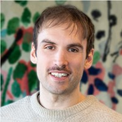
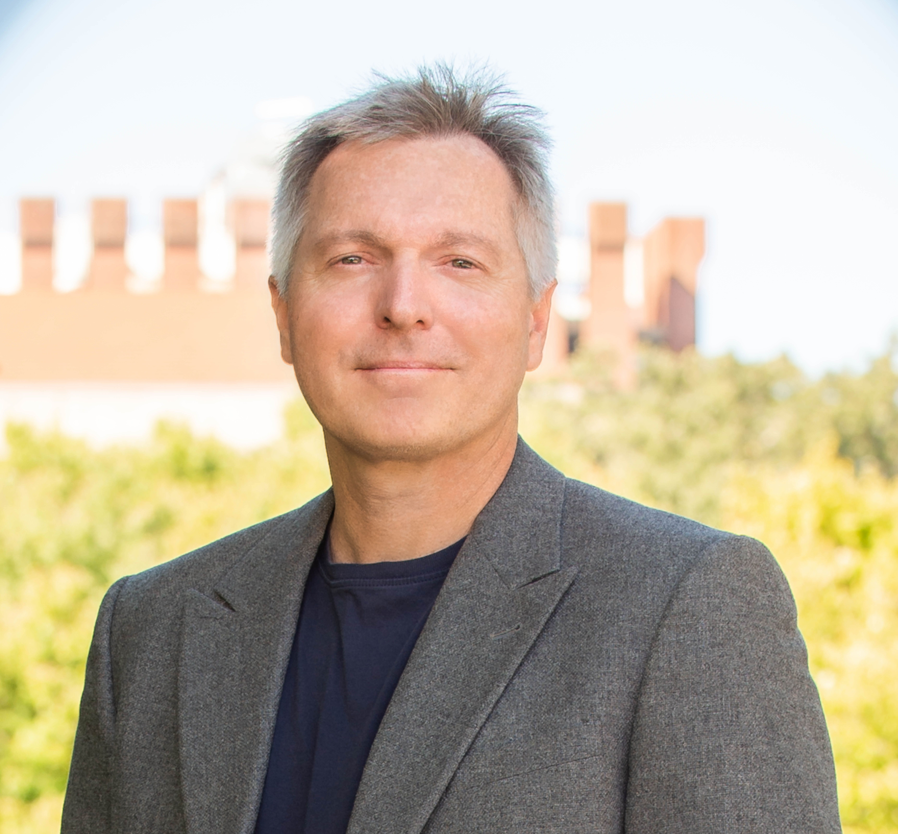
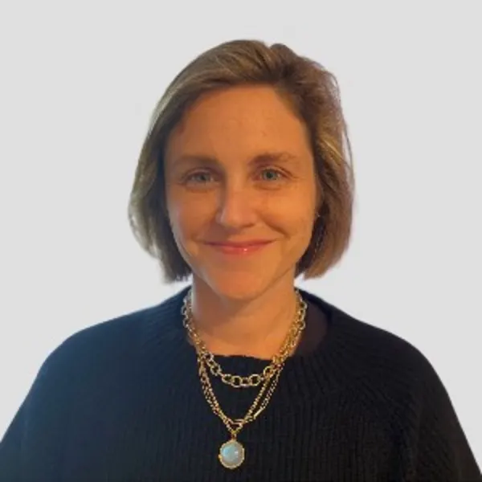

Leadership


Bet Caeyers
Co-lead · Chr. Michelsen Institute
Bet Caeyers is Senior Researcher at Chr. Michelsen Institute (Norway), Research Associate at LRF Center for Economics of Breastfeeding (University of Zurich), and Research Associate at the Institute for Fiscal Studies (IFS, London). She is also Research Director of the Thrive research program and Principal Investigator for Thrive Tanzania, with extensive experience living and working in Sub-Saharan Africa. Her research focuses on scaling Early Childhood Development through rigorous measurement and cost-effective program design. Previously she worked as a Senior Research Economist at the IFS, Global Impact Evaluation Advisor at Oxfam GB, and Research Project Manager at EDI Global.
Ingvild Almås
Co-lead · University of Zurich; Stockholm University; LRF Center for Economics of Breastfeeding
Ingvild Almås is a Professor of Economics, UZH, previously a Professor at the Institute for International Economic Studies (IIES), Stockholm University (SU). She is also a Principal Investigator at FAIR, Norwegian School of Economics and currently a part time professor at IIES. Almås also serves on the Committee of Monetary Policy and Financial Stability at the Norwegian Central Bank. Her research focuses on gaining a better understanding of economic inequalities. She has worked on the measurement of income inequality, its drivers, and the perceptions about inequality that people hold. She has also been working extensively on the decision making in households, gender equality, and child and adolescents development.
Ester Elisaria
Tanzania co-lead · Ifakara Health Institute
Dr. Ester Elisaria has 27 years of experience in implementation, project management, and research focusing on early childhood development, maternal, child and adolescent health, nutrition, and impact evaluation. She is passionate about maternal and child health. Dr. Ester has a great understanding of the health system in Tanzania, having spent seven years working with Tanzania Food and Nutrition Centre as a Nutritionist. She gained a great understanding of working with international organisations, including UNICEF country office, AMREF international and Curtin University in Australia.
Tillmann Eymess
Project Manager · University of Zurich; LRF Center for Economics of Breastfeeding
Tillmann Eymess is a Senior Researcher in the Department of Economics at the University of Zurich. His research interests are in development, behavioral, and environmental economics. As an applied microeconomist, he employs behavioral methods through RCTs, field experiments, as well as online surveys and survey experiments with populations from around the world.
Collaborators

Bianca Yue
Yale University
Bianca Yue
Yale University
Bio to be supplied.

Charlotte Ringdal
Chr. Michelsen Institute; Development Learning Lab (co-director)
Charlotte Ringdal
Chr. Michelsen Institute; Development Learning Lab (co-director)
Her research focuses on family economics — marital conflict, intimate partner violence, violence against children (including FGM), and intra-household resource allocation.

Costas Meghir
Yale University; Institute for Fiscal Studies (IFS)
Costas Meghir
Yale University; Institute for Fiscal Studies (IFS)
Douglas A. Warner III Professor of Economics at Yale University. His research spans human capital and early childhood development (ECD), informal labor markets, labor supply and welfare programs, the economics of the family, including marriage markets and intrahousehold allocation of resources.

Deogardius Medardi
Oxford Policy Management
Deogardius Medardi
Oxford Policy Management
Deo Medardi is a Tanzania-based consultant in OPM's education practice, specialising in the management and delivery of education projects, with a focus on pre-primary, primary and secondary school education. He has over 15 years' multi-sectoral experience in research and evaluation planning, project management, training design, workshops, government engagement and qualitative interviews, and brings a multi-disciplinary approach to his work through his experience in the human development field, particularly on ECD, education, nutrition, and social protection projects.

Devon Spika
University of Zurich
Devon Spika
University of Zurich
Devon is a Postdoctoral Researcher at the University of Zurich. She obtained her PhD in May 2023 from Lund University in Sweden. Her interests lie at the intersection of health, gender, and child development. Her work focuses on how information, social norms, and decision-making within households influence health, cognitive, and socioeconomic outcomes for both children and their parents. She use field experiments and secondary data analysis to generate evidence that can inform public health and social policy.

Gaston Fernandez
Luxembourg Institute of Socio-Economic Research (LISER)
Gaston Fernandez
Luxembourg Institute of Socio-Economic Research (LISER)
Gastón Fernandez is a Research Associate at the Luxembourg Institute of Socio-Economic Research (LISER). He earned his PhD in Economics from KU Leuven in 2025, and his research focuses on household economics, child development, and technological change and innovation.

Georgina Rawle
Public Sector Finance Lead, Tanzania; Oxford Policy Management
Georgina Rawle
Public Sector Finance Lead, Tanzania; Oxford Policy Management
She is an economist with more than 20 years' experience of working on projects involving public finance for children, social sector planning and monitoring and evaluation. She has led multiple long-term projects in Tanzania involving large-scale field research, and is especially familiar with the education sector, including early learning provision. Georgina leads the costing study.

Honorati Masanja
Ifakara Health Institute
Honorati Masanja
Ifakara Health Institute
Dr. Honorati Masanja is the former Chief Executive Director of the Ifakara Health Institute, having served in the position from 2016 to 2026. A statistician and epidemiologist by training, he holds a PhD in Epidemiology and has extensive experience in data management, clinical trials, research design, and the design and evaluation of large-scale maternal and child health programmes.

Kate Gooding
Oxford Policy Management (OPM)
Kate Gooding
Oxford Policy Management (OPM)
Kate is a research and evaluation specialist with 25 years’ experience in international development and a PhD in global health research. She has particular expertise in qualitative methods and theory-driven evaluation. She has worked on a range of global health and social development topics, with a focus on health system strengthening and community health in southern Africa.

Laura van der Erve
Oxford Policy Management (OPM)
Laura van der Erve
Oxford Policy Management (OPM)
Laura brings extensive experience in (quasi-)experimental methods, the analysis of survey and large administrative data, and effectively communicating academic research findings to policymakers. She leads the quantitative process evaluation of Kizazi Kijacho and supports the ECD Centre models and pre-and-postnatal conditions projects in Tanzania, Sierra Leone and Bangladesh. Dr. Van Der Erve also acts as the Country Lead for Sierra Leone.

Laurel Krovetz
Cornell University
Laurel Krovetz
Cornell University
Laurel is currently a PhD student in Applied Economics and Management at Cornell University. Her research interests include nutrition, food security, and consumption smoothing.

Ludovico Carraro
Independent Consultant
Ludovico Carraro
Independent Consultant
Dr Ludovico Carraro is an independent consultant with more than 25 years of experience in development and specialises in welfare/distributional analysis and social protection. He has provided technical assistance and advice in the design and implementation of many social protection programmes in Asia, Africa and Eastern Europe. Ludovico also worked with many statistical offices in the measurement of poverty, generating poverty profiles and looking at social exclusion and overlapping deprivations.
Macklina Mhagama
Affiliation to be confirmed
Macklina Mhagama
Affiliation to be confirmed
Bio to be supplied.

Marc Bornstein
NICHD/NIH; King's College London; York University
Marc Bornstein
NICHD/NIH; King's College London; York University
Marc H. Bornstein is Senior Investigator and Head of Child and Family Research at NICHD, with past faculty positions at Princeton and NYU and appointments at institutions across more than a dozen countries. He is President-elect of the SRCD, Editor Emeritus of Child Development, and founding Editor of Parenting: Science and Practice, and consults widely for governments, foundations, and organizations including UNICEF. His extensive published work spans developmental, comparative, and cultural science, as well as neuroscience, pediatrics, and aesthetics.

Matteo Santangelo Ravà
Queen Rania Foundation; Aix Marseille School of Economics
Matteo Santangelo Ravà
Queen Rania Foundation; Aix Marseille School of Economics
Matteo is a behavioral development economist with a decade of experience in public policy research and evaluation across high- and low-income settings, focused on education, health, and child protection — particularly early childhood development and behavioral science. Currently at the Queen Rania Foundation and pursuing a PhD in Economics at Aix-Marseille School of Economics, researching how behavioral insights can strengthen caregiver engagement and early learning outcomes. A former ODI Fellow and Health Economist at Zanzibar's Ministry of Health, with field experience leading research and program implementation in Zanzibar, Côte d'Ivoire, Jordan, and the Philippines.

Orazio Attanasio
Yale University; NBER; MeToD@Unical; J-PAL; ESRC Centre
Orazio Attanasio
Yale University; NBER; MeToD@Unical; J-PAL; ESRC Centre
Orazio Attanasio is the Cowles Professor of Economics at Yale University. His research spans household consumption and risk-sharing, early childhood development, and the evaluation of policy interventions in developing countries, including major conditional cash transfer and early-years programs across Mexico, Colombia, India, and Ghana.

Pallavi Prabhakar
Stockholm School of Economics
Pallavi Prabhakar
Stockholm School of Economics
Pallavi Prabhakar is a Postdoctoral Research Fellow in the Department of Economics at the Stockholm School of Economics (SSE), with research affiliations at the LRF Center for Economics of Breastfeeding at the University of Zurich and the BRAC Institute of Governance and Development (BIGD). She completed her PhD in Economics at the Norwegian School of Economics (NHH), where she was affiliated with FAIR. Pallavi has previously worked with BRAC in Uganda and Oxford Policy Management in India. Her research focuses on how economic frictions at the government and household levels shape the effectiveness of public programmes, with a particular interest in how policies can be designed and implemented more effectively.

Pamela Jervis
University of Chile; Institute for Fiscal Studies
Pamela Jervis
University of Chile; Institute for Fiscal Studies
Pamela earned her PhD in Economics at UCL (2016) and was a postdoc at IFS's Centre for the Evaluation of Development Policies (EDePo). Her work covers household behaviour, human capital accumulation, and policy evaluation.

Petter Sundqvist
Swedish University of Agricultural Sciences (SLU); PlanAdapt Fellow
Petter Sundqvist
Swedish University of Agricultural Sciences (SLU); PlanAdapt Fellow
Petter has years of experience in research and project implementation in developing countries, mainly acquired in Sub-Saharan Africa and Eastern Europe. As a researcher, he has worked on projects covering climate change vulnerability; armed conflicts and environmental risks; urbanization and maternal health; land governance; and early childhood development. This research has been produced for a range of audiences including local policy-makers, humanitarian actors, academics and international institutions.

Sadashiv Nayanpally
Oxford Policy Management (OPM)
Sadashiv Nayanpally
Oxford Policy Management (OPM)
Sadashiv Nayanpally is a consultant at Oxford Policy Management (OPM). He has over 10 years' experience in education and international development. He has extensive experience in providing technical assistance in education sector financing and planning in India and Tanzania. He is also experienced in using quantitative methods and participatory action research. Sadashiv will lead ECD finance and systems, and also supports the costing study design, analysis and reporting.

Theresa Betancourt
Boston College School of Social Work
Theresa Betancourt
Boston College School of Social Work
Theresa S. Betancourt is the Salem Professor in Global Practice at the Boston College School of Social Work and Director of the Research Program on Children and Adversity, focusing on resilience, mental health, and development in children facing conflict, poverty, and displacement. She leads several major longitudinal and intervention studies, including a long-running study of war-affected youth in Sierra Leone that produced the Youth Readiness Intervention, and Sugira Muryango, a father-engaged early childhood home-visiting program in Rwanda now scaling with support from the LEGO Foundation. Her work has been published widely in leading journals and profiled in outlets including the New Yorker, National Geographic, and CNN.
Advisory Board
Ariel Kalil
University of Chicago - Harris School of Public Policy
Ariel Kalil
University of Chicago - Harris School of Public Policy
Ariel Kalil is the Daniel Levin Professor at the University of Chicago Harris School of Public Policy, where she directs the Center for Human Potential and Public Policy and co-directs the Behavioral Insights and Parenting Lab. She is a developmental psychologist who studies economic conditions, parenting, and child development. She has held visiting appointments at the University of Stavanger School of Business and Law and at NHH the Norwegian School of Economics. She is currently an Associate Investigator at the Australian Research Council Centre of Excellence for Children and Families Over the Life Course. At the Behavioral Insights and Parenting Lab, she draws on insights from behavioral economics and neuroscience to design and experimentally test technology-based interventions to strengthen parental engagement and child skill development in low-income families.

Craig Ferla
CEO, Children in Crossfire (CiC)
Craig Ferla
CEO, Children in Crossfire (CiC)
Bio to be supplied.
Dr. Bundala
Director for Reproductive, Maternal, Neonatal, Child and Adolescent Health · Ministry of Health
Dr. Bundala
Director for Reproductive, Maternal, Neonatal, Child and Adolescent Health · Ministry of Health
Bio to be supplied.

Fortidas Bakuza
Assistant Professor / Deputy Head of Programs · Aga Khan University IED East Africa
Fortidas Bakuza
Assistant Professor / Deputy Head of Programs · Aga Khan University IED East Africa
Dr. Fortidas Bakuza is Assistant Professor and Deputy Head of Programmes at the Aga Khan University's Institute for Educational Development, East Africa, where he has taught since 2014, specializing in early childhood education, teacher education, and education leadership and policy.
James J. Heckman
University of Chicago
James J. Heckman
University of Chicago
James J. Heckman is the Henry Schultz Distinguished Service Professor of Economics and Public Policy at the University of Chicago and Director of the Center for the Economics of Human Development, where his research addresses inequality, social mobility, discrimination, and skill formation through economically interpretable empirical methods. His current work spans early childhood interventions in the U.S. and China, preference and trait measurement among Chinese children, social mobility comparisons between Denmark and the U.S., and the role of family versus neighborhood in shaping life outcomes. He won the 2000 Nobel Prize in Economics for his work on microeconometrics and causal policy evaluation, among numerous other honors including the John Bates Clark Medal, and has been at Chicago since 1973.

John A. List
University of Chicago
John A. List
University of Chicago
John A. List is the Kenneth C. Griffin Distinguished Service Professor in Economics at the University of Chicago and Director of the Becker Friedman Institute for Economics, where he has been since 2005. His research uses field experiments to address both positive and normative questions in microeconomics, work recognized with numerous honors including the Klein, Bernoulli, and Kenneth Arrow Prizes. He has served on the White House Council of Economic Advisers, holds fellowships at the NBER, IZA, and RFF among others, and is Editor of the Journal of Political Economy and JPE: Microeconomics.

Lauren Galvin
Lauren Galvin
Bio to be supplied.

Mwajuma Rwebangila
Executive Director · TECDEN
Mwajuma Rwebangila
Executive Director · TECDEN
Mwajuma Davina Rwebangila, M.A. in Development Studies, has served as the Executive Director of the Tanzania Early Childhood Development Network (TECDEN) since January 2021. Over the past 18 years, she has contributed to various programmes, including HIV/AIDS, youth and women empowerment, accountability, and early childhood development.

Richard Shukia
Lecturer in Child Psychology, Early Childhood Education, and Early Literacy and Numeracy Development · University of Dar es Salaam
Richard Shukia
Lecturer in Child Psychology, Early Childhood Education, and Early Literacy and Numeracy Development · University of Dar es Salaam
Richard Yesaya Shukia is a Senior Lecturer, consultant and researcher at the University of Dar es Salaam with more than 15 years of experience in child psychology, early childhood development, curriculum reform, teacher education and teacher professional development. He has served as a national technical expert supporting MoEST and PO-RALG, including engagement in pre-primary education curriculum review and evaluations of Teacher Continuous Professional Development (TCPD) initiatives across pilot districts. He was a member of the Tanzania research team for RISE – Research on Improving Systems of Education from 2016 to 2022 and is more recently engaged with the What Works Hub for Global Education as part of the Tanzania team. He also served on the National Technical Team for Tanzania Development Vision 2050. Dr Shukia further serves as a Board Member of the Montessori Community of Tanzania and Board Chair of the LearnImpact Initiative. His work centres on education research, policy, programme evaluation, curriculum and training design, and the use of evidence to strengthen education planning and reform..